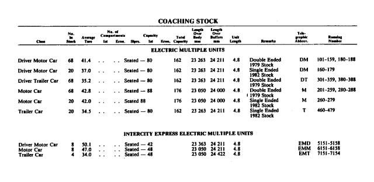

EMU (Walkers/Adtranz Electric Multiple Unit)¶
The EMU as seen on QR's Carriage Layouts page
EMUs are objectively the best of all the train types on the QR SEQ network (in my opinion).
Back in the 1970s, QR stared electrifying Brisbane's suburban railways. The first section completed was between Ferny Grove and Darra and naturally, QR needed some new electric trains to run along the electrified route.
QR ordered a batch of modern air-conditioned commuter trains from Walkers/ASEA at Maryborough. The EMUs are composed of three cars permanently coupled and are capable of seating up to 248 passengers, however they are often operated with two sets coupled together to form a six-car set. The 88 suburban units weigh approx. 150 tonnes, are 72.4m over couplers, have a maximum service speed of 100km/h (62.5mph) and an emergency stopping distance from that speed of only 415 metres.
Individual car seating capacity:
- 80 (DM101–88: driving motor car, DT301–59, DT380–8: driving trailer car, T460–79: trailer car)
- 88 (M201–88: motor car)
Sets 01–13 have a smooth roof, while Sets 14–88, which were built from 1983 to 1986, have a corrugated roof. Most sets consist of a driving motor car, motor car and a driving trailer car. Sets 60–79 consist of a driving motor car, motor car and a trailer car, and thus have a driver’s cab at only one end, so operate with two sets combined to form a six-carriage train.
All cars are air-conditioned with air operated doors, which can be opened by passengers and are closed by drivers. A public address system, UHF crew to crew radio and crew intercommunication systems are fitted. Guards sometimes make passenger announcements when the automatic announcements aren’t working.
They were paired with SMU200s 'early on', but after a derailment between Central and Roma Street (leaving the old tunnels towards Platform 7) they put a stop to it[8].
For some reason, the emergency brake actually takes longer to stop than the full service brake (maybe due to wheel slippage?), but QR crews are required to press the emergency brake in an emergency. Bit of an oversight there.
Like all other passenger trains operating within the Brisbane Suburban Area, EMUs are fitted with AWS (Audible Warning System). When there is an upcoming restrictive signal (any signal other than green), the driver must acknowledge the warning provided for it within three seconds of its receipt by pressing a button on trains' control panels. If the approaching signal is green, no acknowledgment by the driver is required. Should a train proceed past a restrictive signal without the driver having first acknowledged the warning, the train’s emergency brakes are automatically applied to stop the train. For AWS to operate, both track and rollingstock must be equipped[9].
EMUs are also fitted with door sensors and traction interlocks. The sensors trigger the doors to open if they detect an obstruction upon closing, much like an elevator door. Traction interlocks block power to the trains’ drive motors until all doors have fully closed preventing trains from moving with doors open or obstructed. EMUs did not have these upon fabrication, however they were all retrofitted with them as part of a refurbishment program by September 2000 at a cost of $35,000 per 3-car (not inflation adjusted; ~$70,000 in 2025)[9].
Unlike other units, EMUs do not have rigid steel skirts to protect the wheels and undercarriage equipment[9].
Timeline¶
- July 1979 - December 1986: EMU units delivered.
- 1984: 48 units, which were purchased for the price of $44.26 million were sold and leased back.
- September 1986: Units 84, 85, 86 and 88 were hauled to Gladstone to operate a VIP train to Rockhampton in connection with the completion of an electrification project, before operating some special services to Bajool and Mount Larcom.
- 29 April 1988: Units 81–88 operated Sunshine Coast line services from Caboolture to Nambour pending the delivery of the InterCity Express fleet after being fitted with VHF radios. Others appeared on Sunshine Coast services with hand held radios.
- September 1988: InterCity Express units delivered, EMUs operated in multiple with them for a period.
- August 1990: Units 84 and 68 ran through to Gympie North temporarily.
- Late 1993: EMUs fitted with yellow cab ends for higher visibility.
- 1996: Some EMUs appeared on Gold Coast line services, although they were only used sparingly, not being geared to operate at the 140km/h line speed.
- 25 March 1996: A Citytrain EMU collided with a freight train on 25 March 1996 at Bowen Hills. A subsequent board of inquiry into the collision found that it was caused by driver error. The driver of the passenger train failed to stop at a red signal, and the passenger train collided with the freight train as it crossed the track beyond the signal. The collision injured eight passengers and one employee, and caused extensive damage to both trains. The direct cost of the collision was estimated to be $2.72 million (not inflation adjusted; ~$5.66 million in 2024)[9].
- 1998-2000: The cab windows were modified on EMU60-88 for better visibility and also the fitting of a rear view mirror and security cameras inside.
- 2000: The first series EMUs (01-19) were upgraded with high visibility cab ends which incorporated a fender (which incorporates an anti-climber to prevent outriders hanging off the back of a unit) with ditch lights and a new color scheme with a black band across the windscreen (hence the nickname of these units, ‘Bandicoots’).
- May 2001: EMU62 was severely damaged after an Arson attack at Mayne.
- 21 September 2001: EMU05 and EMU60 were both written off in the Cattletrain derailment at Petrie in September. EMU62 was returned to service, while one 3-car unit was salvaged out of both EMU05 and EMU60 to form EMU60, including EM305 (replacing EM160), EM260, and EM360.
- 2018: Withdrawls begin of the EMUs as NGRs were delivered.
- January 2019: 30 EMUs in store.
- August 2019: Queensland Rail operated a farewell tour with units 01 and 04 over two days covering all Brisbane suburban lines including a reenactment of the first electric train service in Brisbane from Ferny Grove to Darra. Both units were removed from service and taken to Ipswich Workshops for static preservation.
- 2020: EMU60 scrapped.
- 2023: QR replaced the routers in EMUs, IMU100s, SMU200s, IMU120s, and SMU220s. The work was contracted out to Nomad Digital and cost $1.75 million[5]. QR also contracted UGL Rail to do a wheelset overhaul on one or (probably) multiple EMU trains, costing $700 thousand[5].
- 2024, March 22: QR launches an investigation following the detection of asbestos in an EMU. It was found in black bitumen paint on the floor and ceiling during asbestos clearing certification as part of the EMU disposal program. EMUs were deemed still safe to travel on, as the paint was sealed in areas that are not accessible to the public, however they were still progressively taken out of service for inspections[10].
- 2024, March 27: An independent asbestos assessor inspected the EMUs and deemed them safe to return to service. The asbestos was found to be in a sealed part of the train, and therefore when the shell of the EMU is covered there is negligible risk of exposure to asbestos[11].
- 2024: QR performed a variety of operations on one or multiple EMU trains (I'm guessing multiple because surely it can't cost that much to do it on just one), including:
- An overhaul of the transformers and reactors, contracted to AC Hargreaves and costing $1.32 million[5].
- An overhaul of the AC units done by Noske-Kaeser Rail & Vehicle and costing $1.19 million[5].
- Changed out some side doors on EMU trains, contracted to Festo for $422 thousand[5].
- Changed out some couplers, contracted to Voith Turbo for $2.94 million[5].
- "Bogie relife", and "Bogie Relife 1" (Heavy Overhaul of QR EMU Bogie) both contracted to Downer EDI Rail and totalling $12.63 million[5, 6].
- 2025: EMUs anticipated to commence retirement (as of August 2021)[7].
- 2025, 5 July: EMU farewell tour, marking the last EMU service, operated by EMU59, the last remaining main-line worthy EMU train. EMU59 ran on the Ipswich, Caboolture, Ferny Grove, and Shorncliffe lines[12].
Fleet Status¶
| Year ordered | Number built | Fleet numbers | Notes |
|---|---|---|---|
| 1977 | 13 | 01–13 | All withdrawn and scrapped, excluding 01 and 04, which are stored at Ipswich. |
| 1979 | 11 | 14–24 | All withdrawn. |
| 1980 | 16 | 25–40 | All withdrawn. |
| 1980 | 20 | 60–79 | Single cab units, 60 originally numbered 80. All scrapped. |
| 1983 | 16 | 41–56 | All withdrawn. |
| 1984 | 8 | 81–88 | All withdrawn. |
| 1985 | 4 | 57–59, 80 | All withdrawn. |
Carriage Layout¶
Carriage 1 (DM)¶
Carriage 2 (M)¶
Carriage 3 (DT)¶
Gallery¶
There may also be other photos in the Gallery

{kind=link}
Details of the EMU and ICE fleet
A 3D model of EMU45/53 on Sketchfab. Switch to First Person view for a better navigation experience.

EMU53 at Darra Station, Platform 1, operating BRIP (Brisbane City - Ipswich) service. Run 1554. Taken 28/12/24 @ 18:59. View png.
The non-driving cab of a '60-series' EMU. Taken 21st August 2014. Source: Wongm's Rail Gallery
{kind=link}

The cab of an EMU maybe??. Source: https://www.reddit.com/r/BrisbaneTrains/comments/1658g65/was_a_great_day_to_play_trains
Another video of the inside of an EMU, this time EM336. Source: https://www.youtube.com/watch?v=nngiPQ2tajY. Archived.
Sources¶
- [1] https://qrig.org/motive-power/self-propelled-passenger-stock/electric-multiple-units/walkersadtranz-electric-multiple-unit-emu
- [2] https://www.railtram.com.au/emu-electric-multiple-unit
- [3] https://en.wikipedia.org/wiki/Electric_multiple_unit_(Queensland_Rail)
- [4] https://www.queenslandrail.com.au/forcustomers/accessibility/carriage-layouts/emu
- [5] https://www.data.qld.gov.au/dataset/queensland-rail-contract-disclosure-fy2023-2024/resource/22563422-0ea2-4bb0-80fb-a0428afc6365 archived here
- [6] https://www.data.qld.gov.au/dataset/queensland-rail-contract-disclosure-fy2024-2025 archived here
- [7] Question on Notice No. 913 - August 31 2021: https://documents.parliament.qld.gov.au/tableoffice/questionsanswers/2021/913-2021.pdf archived here
- [8] https://web.archive.org/web/20220319105847/https://www.reddit.com/r/brisbane/comments/tgrjny/comment/i19m44u/ archived from the original
- [9] https://documents.parliament.qld.gov.au/committees/TSAFE/pre1999/tsafe23.pdf
- [10] https://www.queenslandrail.com.au/about%20us/Media%20Centre/Media%20Releases/Pages/Queensland-Rail-statement-on-asbestos-present-in-an-Electric-Multiple-Unit-(EMU)-train.aspx
- [11] https://www.queenslandrail.com.au/about%20us/Media%20Centre/Media%20Releases/Pages/Updated-Queensland-Rail-statement-on-asbestos-present-in-an-Electric-Multiple-Unit-(EMU)-train.aspx
- [12] https://www.queenslandrail.com.au/about%20us/Media%20Centre/Media%20Releases/Pages/End-of-the-line-for-Queensland-Rails-beloved-Electric-Multiple-Units.aspx